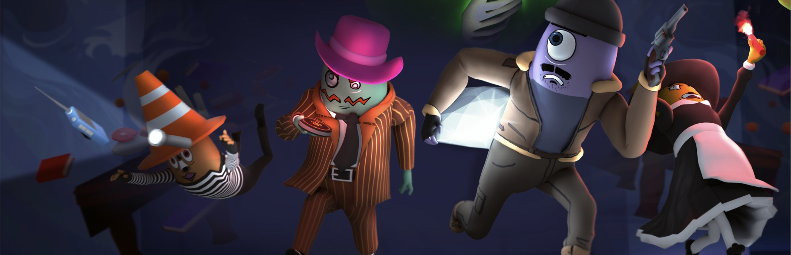
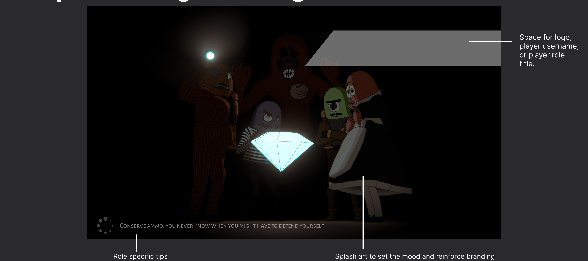
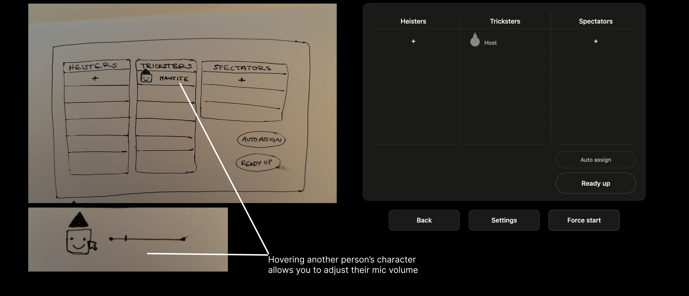
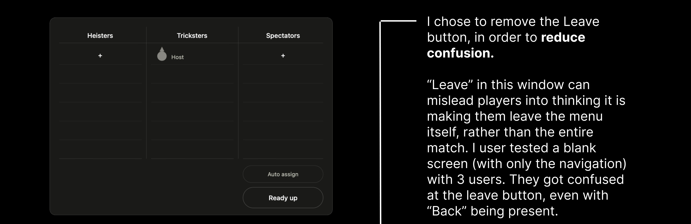

What is Haunted Heist?
Haunted Heist is a round-based PvP horror party game where Heisters race to collect gems in a procedurally generated mansion while Tricksters use chaotic abilities to derail, harass, and scare them away from victory.
The Challenge
The parts of a game that get playtested are the ones players notice: combat, movement, multiplayer, the core loop. Settings, the lobby, and the wait between matches get touched by every player but rarely get the same attention. They're infrastructure, not features, so they're easy to overlook until a player is stuck in one.
That matters most at launch. A wishlist isn't a player yet. It's someone who will decide in their first few minutes whether to keep going or refund the game. Menus that keep a player stuck lead to refunds.
The Solution
I rebuilt the settings menu around one structure a player learns once, redesigned the lobby so you pick a role by dragging your character onto it instead of clunky arrows, and proposed a loading screen that uses the wait to give you tips. A leaderboard is next.
The Outcome
The settings menu shipped on the information architecture I designed, with Autotroph applying the final visual styling in-house. The lobby's drag-and-drop role selection shipped after Autotroph and I reconciled my interaction model with the head-to-head symmetry they wanted to keep. The loading screen and the rest of the lobby changes, including a leave confirmation backed by a three-person test in which every participant misfired, are still in development ahead of the October 12 release.
Settings Menu Redesign
Shipped in the build.
The settings menu had grown a tab at a time, and each tab had been built to its own logic. Video had no grouping between display settings and quality settings, its header text shrank inconsistently below Graphics, and it had no reset. Audio had no section headers at all, so voice chat controls sat mixed in with master volume. Gameplay was the only tab with section headers, which was correct, and which also made it the odd one out.
The result was a menu that asked players to relearn its logic every time they switched tabs. I needed one structure that held across all four tabs, organized around what a player is actually looking for rather than how the settings happened to be filed.
Design problem: give four tabs a single form, without losing what each one already did well.

I started by screenshotting every tab and annotating it directly, marking where the hierarchy broke down and where a tab did something the others didn't. Once that audit was done, I studied the settings menus of five other multiplayer games to see how their hierarchies were structured and how they were presented.
Between the audit and that pass, I landed on three principles.
Same form on every tab. One header pattern, one footer, one grouping logic, and one density.
Group by player intent rather than system category. A new player should be able to intuitively find the feature they need.
Speak the game's language. The chunky outlines, category color, and typography the rest of the game already uses, so the menu aesthetically reads as part of the game.
Autotroph approved the direction, applied the final styling to my structure in-house, and shipped it.
The Loading Screen
In development.
In a multiplayer match every player loads at a different speed. Someone is always waiting on a teammate with slower wifi.
Design problem: make the wait do something for the player instead of just passing.

I proposed a loading screen with room for the player's username and role title, splash art that sets tone and carries the branding, and tips written for the role you were assigned. A reminder to conserve ammo, for instance, because you never know when you'll need to defend yourself from Tricksters. The screen orients you to your role before the match starts, so time spent waiting is time spent getting ready.
The direction is proposed and the piece is in active iteration and development.
The Lobby Menu
Drag-and-drop role selection shipped. Remaining changes in development.
The lobby had two problems that made each other worse. Moving between roles relies on clunky on-screen arrows instead of letting players pick a role directly, which is slower and takes more space than it needs to. The Auto Assign button also sat close enough to the navigation arrows that it could easily cause a misclick.
Design problem: let a player act on what they want in the lobby directly, in a layout that accounts for high player count.

The direction I dropped. My first direction had player models lined up, with room for players to emote and have fun while their friends readied up. I decided against it once I brought it back to a constraint from Autotroph: the lobby needed to account for 8 players along with spectators. Visually, this would cause the lobby menu to be very chaotic and cramped. It would also be difficult since head-to-head symmetry was important to Autotroph, since there would always be more Heisters than Tricksters. One side of the screen would be flooded with players, while the Tricksters side would only have 2-3. These constraints pushed me toward direct manipulation.
What I proposed. The arrows are gone. Every role can be selected directly, and a player drags their own character onto the role they want.
Hovering another player's character lets you adjust their mic volume from that spot, rather than through settings. Desk research on multiplayer game frustrations kept surfacing the same complaint, that players had no way to raise or lower a specific friend's volume. I built it into the lobby specifically because that's the first place a player would actually notice someone's volume was off, right as the group is forming. Putting it there also kept the fix inside a player's existing flow of starting a match, instead of asking them to dig into settings to solve it.

The crown marking the host moved from beside the role UI to above their head, so it is more obvious. Auto Assign and Ready Up moved out of the middle of the role selection flow, so a misclick no longer disrupts the role selection process.
The Leave button. My reasoning going in was that Leave was ambiguous in this context. It could read as leaving the menu or leaving the match, and a player who interprets it the wrong way drops out of a game they meant to stay in. I proposed removing it from this screen.
I ran a moderated test with three users. Every participant left the lobby when they meant to leave the menu. Three for three confirmed the ambiguity was real, but it also changed my conclusion: the fix isn't removing the exit, it's confirmation dialog before it happens. That recommendation is with Autotroph and hasn't been implemented yet.

Where it landed. Autotroph pushed back on part of the direction. They liked most of the proposal, but they wanted to keep the original concept's head-to-head symmetry between Heisters and Tricksters, which my layout had moved away from. We landed on a combined version: their symmetry, my interaction model. The drag-and-drop role selection is in the build. The mic volume control, crown placement, button relocation, and leave confirmation are still in development.
Where it Stands
Haunted Heist releases October 12. The settings menu and drag-and-drop role selection are in the build. The loading screen and the rest of the lobby work are in development. This case study is evolving everyday, I can't wait to show you the progress made at launch! :)